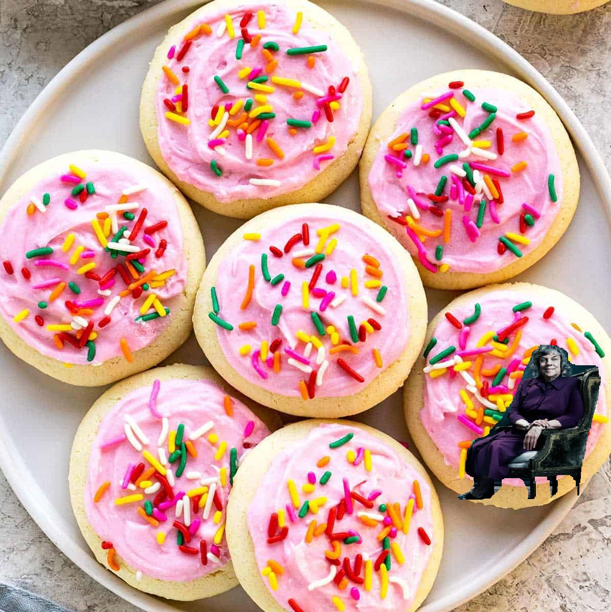

Your Mission

Today, on August 15th, 2022, the most nefarious thing has happened. Some evildoer, codename Bussy, has stolen the world's supply of shitty walmart cookies. Now, shitty as they may be, they still are delicious, and their theft is truly an attack on modern society. We need you to go on an elaborate online hunt to find the nefarious Bussy and locate the hidden stash of cookies. The world is counting on you, Agent Francis.
To assist you in your investigation, here is everything we have on the suspect:
- Name: Ruth Buskirk
- Codename: Bussy
- Defining Characteristics: An evil smile, discerning eyes, recently wrote a recommendation letter for a student named Cindy Hu. Are you familiar with her, Agent Francis?
- Height: how tf would I know this
- Shirt size: idk a medium?
- Address: now this is getting weird
- Occupation: Biology Professor at the University of Texas at Austin
- Motivations: An intense love for sugar frosting cookies and an intense hate of the agency
- Skillsets: A surprisingly skilled hacker, she might be in our systems as you read this. Stay alert. Also incredibly talented in chemistry, has many years of experience in inspecting elements